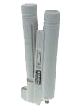
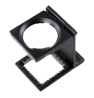

Comercial y representaciones J. Velasco
Comercial y representaciones J. VelascoDisponibles los siguientes productos de venta directa para flexografía. Precios a consultar. Contactar a través de la página de contacto.
- Pantonera Pantone Formula Guide 336 Colores versión 2012
- Microscopio digital 20X-400X con iluminación LED USB 2.0 1,3 MP
- Microscopio digital 5X-500X con iluminación LED USB 2.0 2MP
- Microscopio Nano con iluminacion de 2 LED + 1 LED UV (Disponible en 45X y 60X)
- Microscopio Arco con iluminación LED y escala (Disponible en 40X, 80X y 150X)

- Microscopio tipo Bolígrafo 60X con iluminación 2 LED + 1 LED UV y escala
- Microscopio digital portátil 10X-500X
- Micrómetro digital de precisión 0.01mm
- Cuentahilos Metálico 15x

- Linterna 12 LED UV
- Linterna LED UV alta luminosidad 3W + cargador + baterías
- Cepillo Limpieza Anilox
- Gel Limpieza Anilox 750ml
- Analizador de Planchas flexográficas Flex3Pro
- Lectores de códigos de barras
- Capatch - medidor de volumen para rodillos anilox
- Analizador de hendidos Creasy
- Densitómetro Pocket Dens One
- Programa Reprofiler para controlar la estabilidad de color
- UVtec - Etiquetas de control de energía UV (10 unidades)